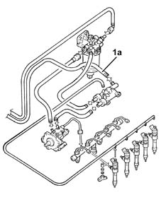

1060A LOW RETURN FUEL PRESSURE CIRCUIT CHECK
- Path
- Test > 10 ENGINE UNIT > 1060 DIESEL INJECTION SYSTEM > 1060A LOW RETURN FUEL PRESSURE CIRCUIT CHECK
- Kind
- test / check procedure
- Applies to
- engines: 1.9 JTD 16V; all production periods
- Interactive page
- https://sloeber94.github.io/elrnDB-aGt/en/#/125000749
Applies to: engines: 1.9 JTD 16V; all production periods
Connect the pressure transducer for the Examiner diagnostic equipment to the return pipe to the tank (1a).
Turn the ignition ON.
Check that, within 30 seconds, the pressure gauge's reading is less than 1 bar.
